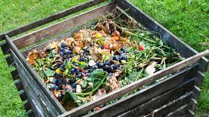
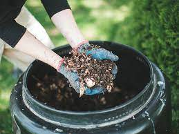

One of the most crucial issues in environmental protection and natural resources conservation is waste management. Various methods can be applied to manage the solid waste. Biological treatment, thermal treatment and landfilling are the common ways for disposal of solid waste. (Seng et al., 2011; Yildirim, 2012). Human beings have been making organic fertilizers by biological decomposition of organic matter (usually wastes) for an inordinate length of time in an art commonly referred to as composting (Lundin, 2007). The recent increased interest in composting however has arisen because of the need for environmentally sound waste treatment (Yvette, et al.,2000).
The process destroys pathogens, converts nitrogen from the unstable ammonia to stable organic forms, reduces the volume of waste and improves the nature of the waste. It also makes waste easier to handle and transport and often allows for higher application rates because of the more stable, slow release nature of the nitrogen in compost (Fauziah and Agamuthu,2009). Composting is a promising alternative pretreatment method used to overcome the negative effects on soil environment associated with the land application of organic waste because it can provide sanitized.
According to Fialho et al., (2010), temperature is one of the main parameters for monitoring the composting process. The temperature of all compost piles followed the typical temperature pattern of many composting processes: the mesophilic phase (T<50°C), where temperature increased rapidly; the thermophilic phase, where the temperature reached up to its maximum value, and the cooling and maturation phase, where the temperature stayed constant and close to the ambient temperature.
